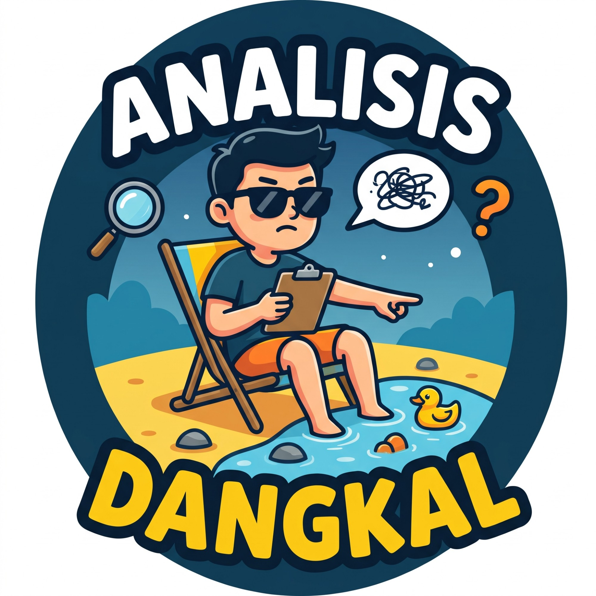

Andal
Analisis DangkalKetentuan Layanan / Terms of Service
andal-pipeline adalah alat internal channel Andal dan tidak ditawarkan kepada publik. Alat ini hanya dipakai untuk mengelola konten di akun milik channel Andal sendiri, sesuai ketentuan YouTube, Meta (Instagram), TikTok, dan Google. / andal-pipeline is an internal tool of the Andal channel and is not offered to the public. It is used only to manage content on the Andal channel's own accounts, in line with the terms of YouTube, Meta (Instagram), TikTok and Google.
Konten video Andal dibuat untuk informasi umum; kami berusaha memakai sumber tepercaya, tetapi tidak menjamin bebas kesalahan. / Andal videos are for general information; we aim to use reliable sources but do not guarantee they are error-free.
Kontak / Contact: @analisisdangkal
Terakhir diperbarui / Last updated: 24 November 2026